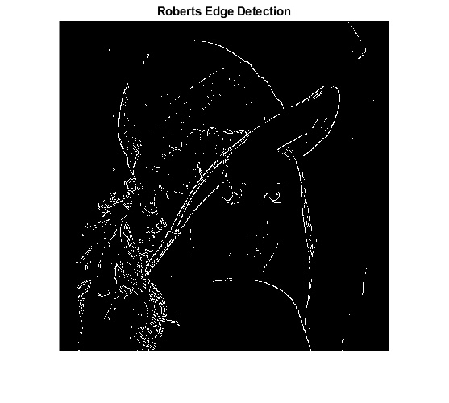
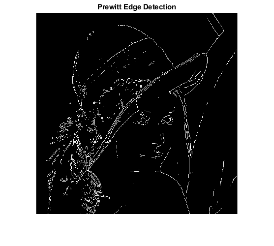
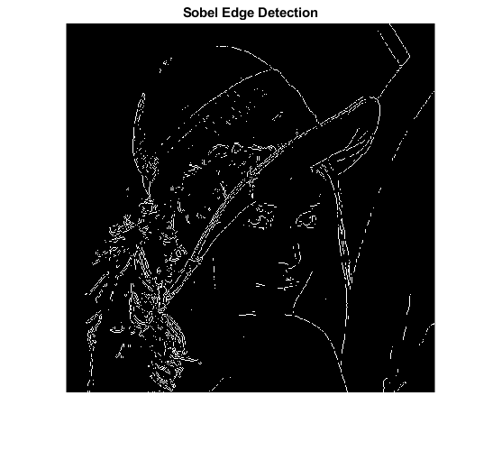
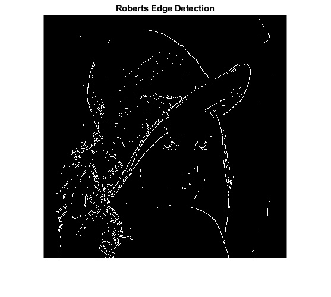
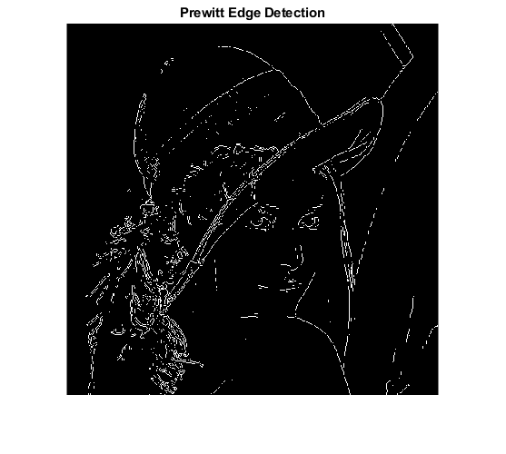
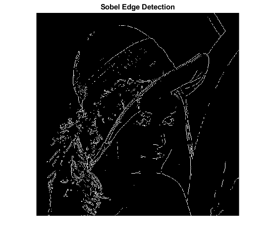
A = imread('lowcontrast.jpg');
L = 255;
equ = my_histeq(A, L);
figure
sgtitle('Problem 1 Original')
subplot(2,1,1)
imshow(A)
subplot(2,1,2)
imhist(A)
figure
sgtitle('Problem 1 Modified')
subplot(2,1,1)
imshow(equ)
subplot(2,1,2)
imhist(equ)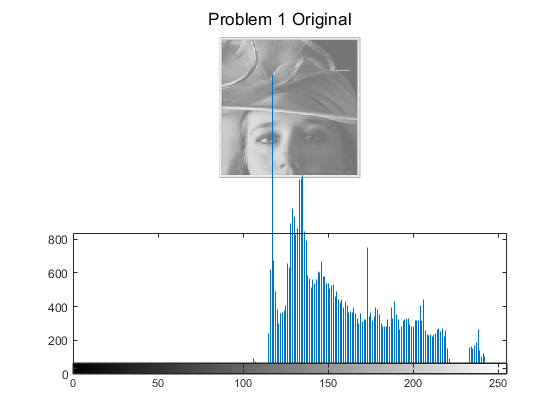 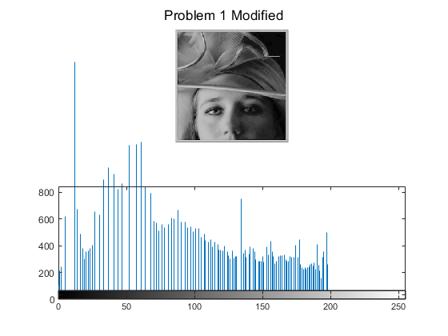
A = imread('lena.bmp');
B = rgb2gray(A);
figure
imshow(B);
roberts = edge(B, 'Roberts');
figure
imshow(roberts), title('Roberts Edge Detection');
prewitt = edge(B, 'Prewitt');
figure
imshow(prewitt), title('Prewitt Edge Detection')
sobel = edge(B, 'Sobel');
figure
imshow(sobel), title('Sobel Edge Detection')
% the roberts edge is the worst of the three. I can't tell the difference
% between the other two.
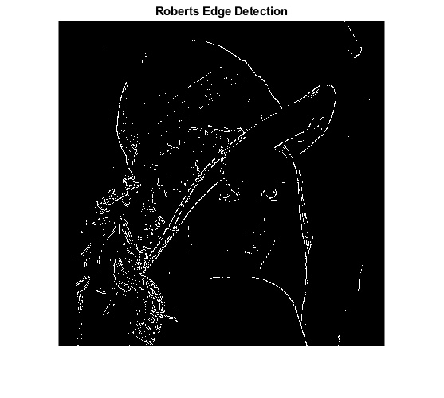
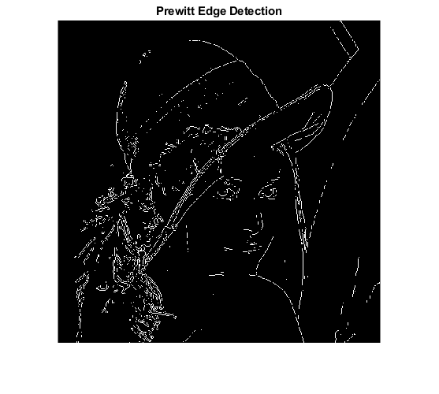
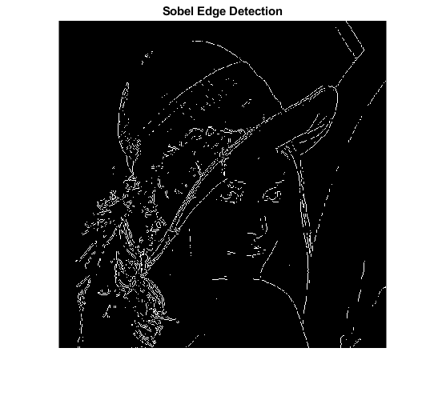
A = im2double(imread('blur_image.jpg'));
mask = [-1 -1 -1; -1 8 -1; -1 -1 -1];
ConvImg = imfilter(A, mask);
minConv = min(ConvImg(:));
maxConv = max(ConvImg(:));
ConvImg = (ConvImg - minConv) / (maxConv - minConv);
SharpImg = A + ConvImg;
minSharp = min(SharpImg(:));
maxSharp = max(SharpImg(:));
SharpImg = (SharpImg - minSharp) / (maxSharp - minSharp);
SharpImg = imadjust(SharpImg, [60/255 200/255], [0,1]);
figure;
subplot(1,3,1), imshow(A), title('Original Image')
subplot(1,3,2), imshow(ConvImg), title('Laplacian Filtered Image')
subplot(1,3,3), imshow(SharpImg), title('Sharpened Image')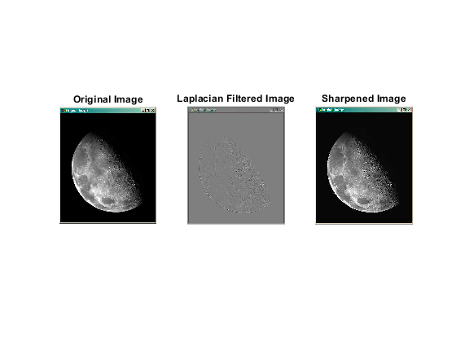
function final = my_histeq(A, L)
FreqPix = imhist(A);
Cumhist = cumsum(FreqPix);
CDFPix = Cumhist/L;
Valrep = CDFPix(double(A)+1);
final = uint8(Valrep);
end
Not enough input arguments.
Error in my_histeq (line 2)
FreqPix = imhist(A);